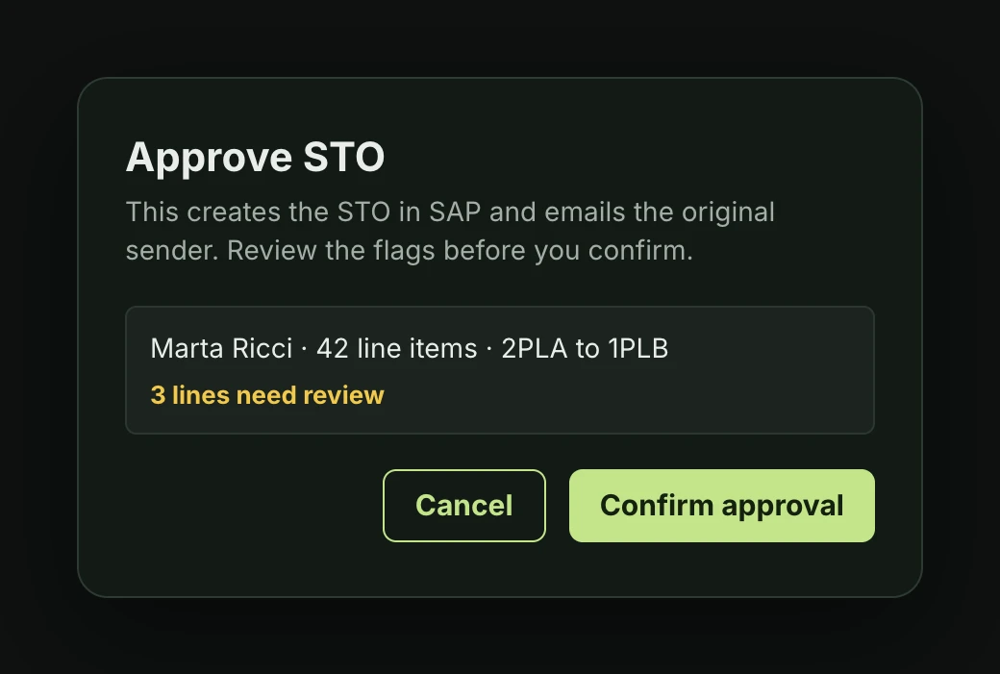
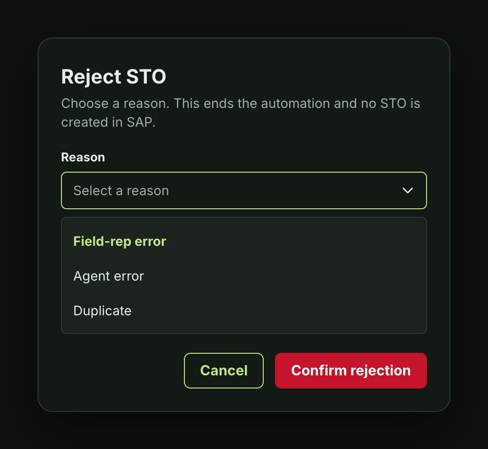
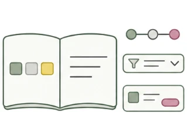
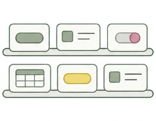
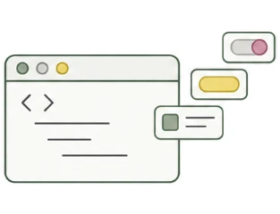
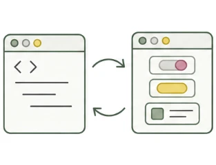
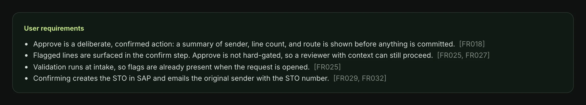

Case study · 5 min read
Where a person checks an agent before it reaches SAP
An AI agent drafts stock transport orders from emails and spreadsheets. A few failed SAP attempts lock the account it uses and stop orders for every sender. I designed the screen where an approver sees which lines to fix, which to check against the source, and which the system changed.
- Client
- Supply chain team at a global corporation
- My role
- UX design consultant. I found the account-lock risk that set the screen’s job, designed the three flags and the review workflow, and built every screen from a design system I’d made in code, so reviews with the engineers and managers went to product questions.
- Built with
- Claude Code, the Figma MCP server

What a failure costs
Requests to move stock between sites arrive at a shared mailbox, as an Excel sheet or typed in the email. An agent reads each one and drafts a stock transport order. A person approves it before anything is created in SAP.
The first question I asked the engineers wasn’t about the screen. It was: what happens when SAP says no?
The agent logs into SAP with one service account, and that account locks after a few failed attempts. A lock doesn’t stop one order. It stops the automation for every sender until IT unlocks it.
That changed what the review screen was for. Its job was to make sure every failure the system can see coming happens here, in front of a person, not at SAP.

Three questions, three kinds of flag
A single “needs review” badge would have mixed up three different risks. So each flag answers one question:
- Will SAP accept it? Every line is checked against SAP’s master data when the email arrives, before anyone opens it. A line that fails blocks Approve, because it would fail at SAP too.
- Did the agent read it right? Low confidence asks the reviewer to check the source. Approve stays open, because the reviewer often knows what the agent couldn’t.
- Did the system change it? When duplicate lines are summed, the total is marked Merged and its parts sit underneath.

I wasn’t sure about leaving low confidence ungated, and a hard stop would have been simpler to build. What we agreed on: the confirm step counts the lines still flagged, so going ahead is a decision, not a slip.

Every outcome has a reason
Reject takes one of three fixed reasons: field-rep error, agent error, or duplicate. No free text. The split tells the team whether to fix the agent or the senders’ instructions.

Some refusals can’t be seen in advance. When SAP does refuse an order, its error is kept word for word, emailed back to the sender, and filed under SAP failed in the history.

Built from a system I’d already made
The screens started from work I’d already done. The style guide and pattern library I made for the company’s 40+ SAP apps had been folded into its newest design system.

Style guide and patternsone standard for 40+ SAP apps
A larger design systemthat work folded into the company’s newest system
Rebuilt in Claude Codetokens, 48 components, their rules, and a plugin
Synced to Figmaevery component, through the Figma MCP server
I built that design system in code with Claude Code: tokens, 48 components, and the rules for using them. The developers still wanted a Figma prototype, so I used the Figma MCP server to build every component in Figma from the code and keep the two in sync.
Then I packaged it as a Claude Code plugin. Installed on any project, it hands Claude the stylesheet, the component catalog, and the brand and accessibility rules, so a new screen is built from the system instead of invented. A new release reaches every project that has it installed.
So these screens weren’t drawn one at a time. They came out of the rules I’d written into the system, which left the review sessions free for product questions.
What working with AI changed
The screens were the smaller part of what AI changed. The bigger part was how knowledge moved between me, the engineers, and the managers.
- Every screen carries its requirements. Each screen sat beside the numbered requirements it met, so a review checked FR025 against the screen that meets it, not against anyone’s memory.
- Feedback arrived clear. Sessions were recorded, and AI turned them into notes and translated them, so a comment made in another language or accent reached the change in plain words.

I think that’s the real gain. AI makes knowledge easier to share, across languages, accents, and roles.
Reviewed until it held
I took the screens through multiple review sessions with the engineers and managers. Some calls changed along the way. The source became a one-click download of the original email, not a side-by-side panel. The second round came back approved.
Dark mode came from a question. I asked the developers what they work in, and almost all of them said dark. Because it’s a theme in the design system, light mode is a switch, not a redesign.
An agent that’s right most of the time still needs a screen designed for the time it isn’t.